| 1461319 | | 4.70 | | simple | 0.700 | | dislike_product | 0.400 | | good_design | 0.400 | | useful | 0.300 | | boring | 0.200 | | entertaining | 0.200 | | like_product | 0.200 | | trustworthy | 0.200 | | bad_design | 0.100 | | unclear | 0.100 |
| | | | |
| 1461378 | | 4.80 | | good_design | 0.700 | | simple | 0.400 | | bad_design | 0.300 | | entertaining | 0.300 | | boring | 0.200 | | dislike_product | 0.200 | | trustworthy | 0.200 | | useful | 0.200 | | clickbait | 0.100 | | like_product | 0.100 | | unclear | 0.100 |
| | | | |
| 1461427 | | 4.30 | | simple | 0.600 | | bad_design | 0.400 | | like_product | 0.400 | | useful | 0.300 | | boring | 0.200 | | good_design | 0.200 | | clickbait | 0.100 | | deceptive | 0.100 | | trustworthy | 0.100 |
| | | | - Makes sense. Wouldn't buy a hand sanitizer so weak, but I'm glad to see that information upfront!
|
| 1461473 | | 4.60 | | good_design | 0.500 | | like_product | 0.300 | | simple | 0.300 | | boring | 0.200 | | dislike_product | 0.200 | | trustworthy | 0.200 | | clickbait | 0.100 | | entertaining | 0.100 | | useful | 0.100 |
| | | | - If I was looking for paint I'd be interested, but I'm not
|
| 1462110 | | 4.30 | | simple | 0.500 | | good_design | 0.400 | | boring | 0.300 | | entertaining | 0.300 | | like_product | 0.300 | | dislike_product | 0.200 | | trustworthy | 0.200 | | bad_design | 0.100 | | clickbait | 0.100 | | useful | 0.100 |
| | | | |
| 1462660 | 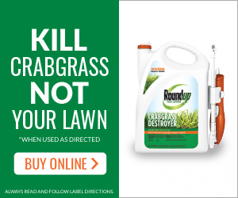 | 4.70 | | good_design | 0.800 | | simple | 0.800 | | useful | 0.600 | | boring | 0.400 | | dislike_product | 0.400 | | trustworthy | 0.400 | | like_product | 0.200 |
| | | | - Round up is a legit company that I know. If I click on it chances are I will go to Round up's website which is trust worthy.
|
| 1462772 | | 4.90 | | like_product | 0.500 | | simple | 0.500 | | good_design | 0.300 | | trustworthy | 0.300 | | useful | 0.200 | | boring | 0.100 | | deceptive | 0.100 |
| | | | - I wish I had more context on why this face mask is a best-seller because that doesn't necessarily mean it's a good mask.
- Pushes people to take the initiative to find a face mask to protect themselves and others while they are jogging.
|
| 1462907 | 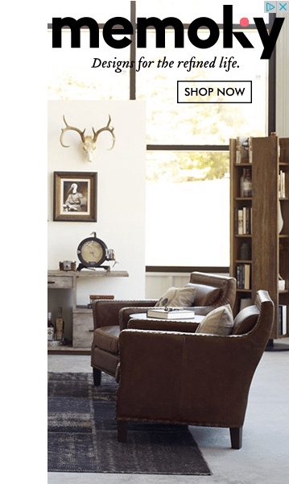 | 4.50 | | simple | 0.600 | | good_design | 0.500 | | boring | 0.300 | | like_product | 0.300 | | bad_design | 0.200 | | trustworthy | 0.200 | | deceptive | 0.100 | | dislike_product | 0.100 | | entertaining | 0.100 | | manipulative | 0.100 | | useful | 0.100 |
| | | | - The store has an interesting name.
- the slogan is nice
|
| 1462933 | 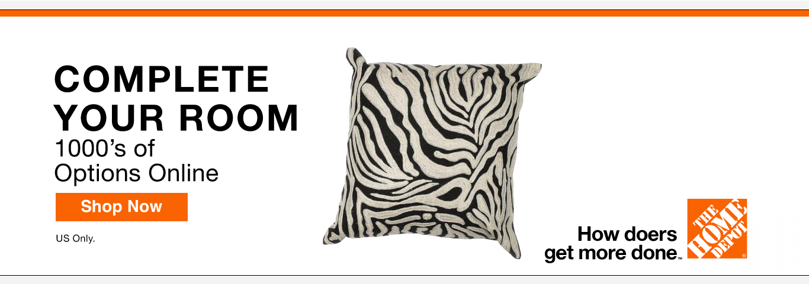 | 3.90 | | simple | 0.500 | | good_design | 0.300 | | trustworthy | 0.300 | | bad_design | 0.200 | | boring | 0.200 | | like_product | 0.200 | | clickbait | 0.100 | | dislike_product | 0.100 | | useful | 0.100 |
| | | | - The ad is not curated towards me it's just a random pillow.
- My god, that is an ugly pillow.
|
| 1463063 | | 4.18 | | like_product | 0.455 | | simple | 0.364 | | useful | 0.364 | | bad_design | 0.182 | | clickbait | 0.182 | | entertaining | 0.182 | | good_design | 0.182 | | trustworthy | 0.182 | | unclear | 0.182 | | boring | 0.0909 |
| | | | |
| 1463277 | 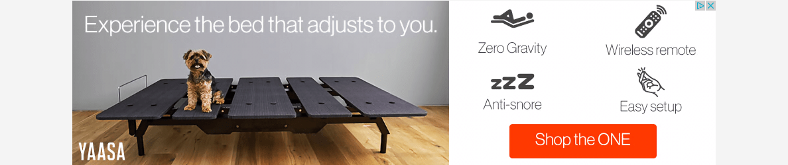 | 4.50 | | good_design | 0.400 | | like_product | 0.300 | | simple | 0.300 | | boring | 0.200 | | dislike_product | 0.200 | | unclear | 0.200 | | clickbait | 0.100 | | entertaining | 0.100 | | manipulative | 0.100 | | useful | 0.100 |
| | | | - None
- The icons are fun but it's a big bigger than I'd like, and I'm not wild about the product itself
|
| 1463461 | 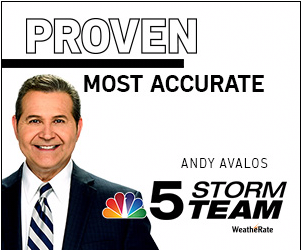 | 4.50 | | good_design | 0.600 | | simple | 0.600 | | trustworthy | 0.600 | | deceptive | 0.200 | | boring | 0.100 | | clickbait | 0.100 | | dislike_product | 0.100 | | entertaining | 0.100 | | like_product | 0.100 | | unclear | 0.100 | | useful | 0.100 |
| | | | - It is kinda boring but is designed well.
|
| 1463480 | | 3.90 | | good_design | 0.500 | | unclear | 0.500 | | useful | 0.400 | | simple | 0.300 | | trustworthy | 0.300 | | boring | 0.100 | | clickbait | 0.100 | | dislike_product | 0.100 | | like_product | 0.100 | | manipulative | 0.100 |
| - Scientific Journal
- Self-Link
| | | - Colors are a nice touch
- I dont like kids
|
| 1463487 | | 4.10 | | boring | 0.400 | | simple | 0.300 | | good_design | 0.200 | | like_product | 0.200 | | unclear | 0.200 | | useful | 0.200 | | dislike_product | 0.100 | | entertaining | 0.100 | | trustworthy | 0.100 |
| - Scientific Journal
- Self-Link
| | | |
| 1463524 | 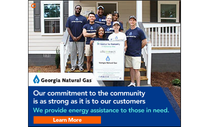 | 5.00 | | simple | 0.700 | | good_design | 0.600 | | boring | 0.400 | | trustworthy | 0.400 | | useful | 0.300 | | like_product | 0.200 | | bad_design | 0.100 | | unclear | 0.100 |
| | | | - I like how they say they help the community.
|
| 1463536 | | 4.60 | | simple | 0.600 | | good_design | 0.400 | | like_product | 0.400 | | bad_design | 0.100 | | boring | 0.100 | | clickbait | 0.100 | | dislike_product | 0.100 | | trustworthy | 0.100 | | useful | 0.100 |
| | | | |
| 1463579 | | 4.10 | | simple | 0.600 | | unclear | 0.300 | | useful | 0.300 | | boring | 0.200 | | good_design | 0.200 | | like_product | 0.200 | | trustworthy | 0.200 | | clickbait | 0.100 | | dislike_product | 0.100 |
| | | | - I don't know what NFM is
- I really have a hard time seeing the ad (if it's what I see as outlined in yellow) - not really clear.
- I've never heard of this brand. It seems like a legit ad, maybe one I'd see for kohl's.
|
| 1463746 | | 3.92 | | good_design | 0.500 | | simple | 0.500 | | dislike_product | 0.250 | | like_product | 0.250 | | boring | 0.167 | | clickbait | 0.0833 | | manipulative | 0.0833 | | unclear | 0.0833 | | useful | 0.0833 |
| | | | |
| 1463748 | 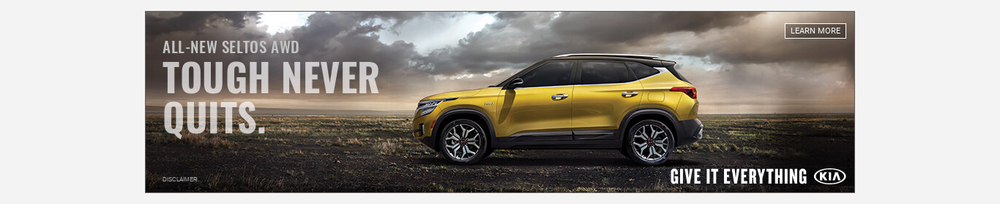 | 4.20 | | good_design | 0.500 | | simple | 0.400 | | boring | 0.200 | | like_product | 0.200 | | bad_design | 0.100 | | dislike_product | 0.100 |
| | | | |
| 1463782 | 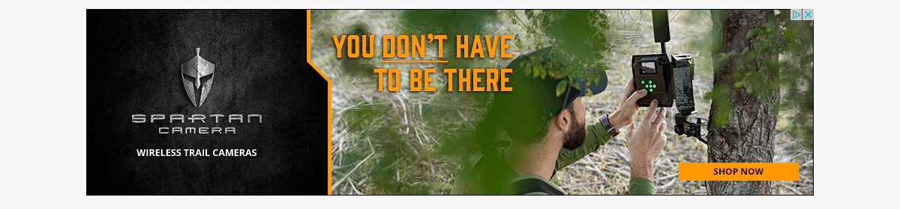 | 4.73 | | good_design | 0.364 | | simple | 0.364 | | bad_design | 0.273 | | entertaining | 0.273 | | like_product | 0.273 | | boring | 0.182 | | dislike_product | 0.182 | | trustworthy | 0.182 | | unclear | 0.182 | | useful | 0.182 | | clickbait | 0.0909 |
| | | | |
| 1463816 | | 4.36 | | boring | 0.727 | | good_design | 0.545 | | simple | 0.455 | | trustworthy | 0.364 | | useful | 0.364 | | unclear | 0.273 | | bad_design | 0.182 | | like_product | 0.182 | | dislike_product | 0.0909 | | entertaining | 0.0909 |
| | | | - It looks like an informational ad that can provide you genuine information.
|
| 1463899 | | 4.50 | | simple | 0.800 | | good_design | 0.400 | | like_product | 0.400 | | useful | 0.400 | | bad_design | 0.200 | | boring | 0.100 | | dislike_product | 0.100 | | trustworthy | 0.100 |
| | | | - It seems like an interesting extension but I need to know more about how they track you and what kind of additional information is store about you.
|
| 1463931 | 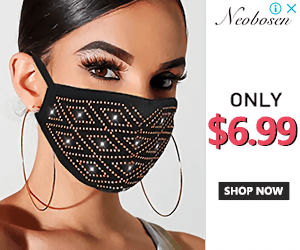 | 5.10 | | good_design | 0.500 | | like_product | 0.400 | | bad_design | 0.200 | | boring | 0.200 | | simple | 0.200 | | entertaining | 0.100 | | manipulative | 0.100 | | trustworthy | 0.100 | | unclear | 0.100 | | useful | 0.100 |
| | | | - I generally just don’t like ads that pop up and cover the whole screen
- The more ads like this that people see, the more masking is taken as a given and necessary.
- That mask design looks tacky
|
| 1464094 | | 4.50 | | simple | 0.700 | | bad_design | 0.300 | | boring | 0.300 | | good_design | 0.300 | | clickbait | 0.200 | | trustworthy | 0.200 | | dislike_product | 0.100 | | like_product | 0.100 | | unclear | 0.100 | | useful | 0.100 |
| | | | - I had to strain my eyes to read it
|
| 1464256 | | 4.70 | | simple | 0.800 | | trustworthy | 0.500 | | useful | 0.400 | | bad_design | 0.200 | | boring | 0.200 | | dislike_product | 0.200 | | like_product | 0.200 | | good_design | 0.100 |
| | | | |
| 1464567 | | 3.90 | | simple | 0.700 | | good_design | 0.300 | | unclear | 0.300 | | bad_design | 0.200 | | clickbait | 0.100 | | entertaining | 0.100 | | like_product | 0.100 | | trustworthy | 0.100 | | useful | 0.100 |
| | | | - It is hard for me to make out what is depicted in the image. Too much white in the ad overall makes it hard to see.
|
| 1464590 | | 4.60 | | simple | 0.800 | | boring | 0.400 | | trustworthy | 0.200 | | useful | 0.200 | | bad_design | 0.100 | | clickbait | 0.100 | | dislike_product | 0.100 | | good_design | 0.100 | | like_product | 0.100 | | unclear | 0.100 |
| | | | |
| 1464597 |  | 3.82 | | simple | 0.636 | | useful | 0.455 | | bad_design | 0.364 | | boring | 0.273 | | trustworthy | 0.273 | | clickbait | 0.182 | | like_product | 0.182 | | unclear | 0.182 | | dislike_product | 0.0909 | | good_design | 0.0909 | | manipulative | 0.0909 |
| | | | |
| 1464649 | | 3.70 | | simple | 0.800 | | bad_design | 0.400 | | boring | 0.400 | | trustworthy | 0.300 | | good_design | 0.200 | | manipulative | 0.200 | | useful | 0.200 | | clickbait | 0.100 | | dislike_product | 0.100 | | entertaining | 0.100 | | like_product | 0.100 |
| | | | - The call for action is somewhat done well.
- It's a cliche for a company to say things like, "It's all about what you want", "You're more important", etc. Such rhetoric promotes selfishness.
|
| 1464751 | 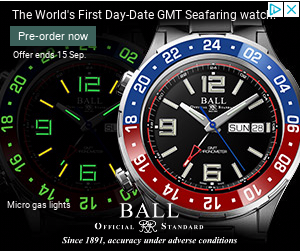 | 3.50 | | bad_design | 0.400 | | simple | 0.400 | | boring | 0.300 | | good_design | 0.300 | | like_product | 0.300 | | useful | 0.300 | | dislike_product | 0.100 | | entertaining | 0.100 | | manipulative | 0.100 | | trustworthy | 0.100 | | unclear | 0.100 |
| | | | - It's too cramped.
- Looks rugged
- Nothing too special
- Great visual. Makes me want to purchase this watch.
|
| 1464809 | | 4.50 | | simple | 0.400 | | bad_design | 0.300 | | boring | 0.300 | | good_design | 0.300 | | useful | 0.300 | | like_product | 0.200 | | deceptive | 0.100 | | dislike_product | 0.100 | | trustworthy | 0.100 |
| | | | |
| 1464995 | 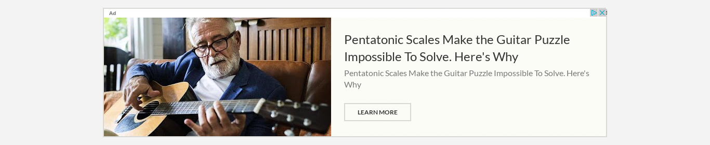 | 4.30 | | good_design | 0.300 | | like_product | 0.300 | | simple | 0.300 | | boring | 0.200 | | dislike_product | 0.200 | | unclear | 0.200 | | useful | 0.200 | | clickbait | 0.100 | | entertaining | 0.100 |
| | | | - The topic doesn't really interest me much so if I were to see this ad, I would just gloss over it and not pay too much attention.
- I have no idea what that ad is talking about, but it seems like an intriguing subject.
- not interested
|
| 1465007 | 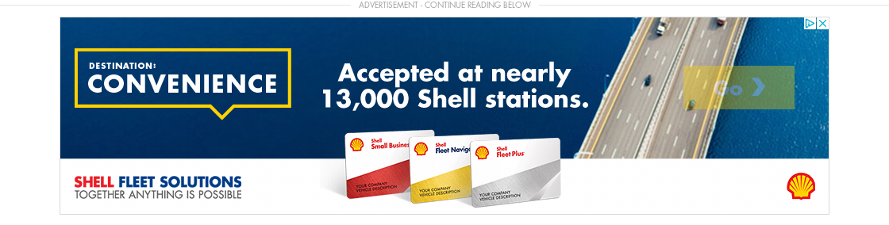 | 4.20 | | simple | 0.700 | | good_design | 0.500 | | boring | 0.200 | | dislike_product | 0.200 | | trustworthy | 0.200 | | bad_design | 0.100 | | like_product | 0.100 | | unclear | 0.100 | | useful | 0.100 |
| - B2B Products
- Banking/Credit Cards
| | | |
| 1465015 | | 5.27 | | good_design | 0.636 | | simple | 0.455 | | unclear | 0.364 | | boring | 0.273 | | clickbait | 0.273 | | entertaining | 0.273 | | like_product | 0.273 | | useful | 0.182 | | dislike_product | 0.0909 | | trustworthy | 0.0909 |
| | | | - It isn't specific about what exactly is new at Dermstore. Is it one type of product or do they have a line coming out?
- no
- The design is a nice shade of pink which is one of my favorite colors. However, I am not interested in skin care products. It is also unclear what that product even is on the ad.
- I think it goes with the website and isn’t really hindering your viewing like a pop up ad.
|
| 1465019 | 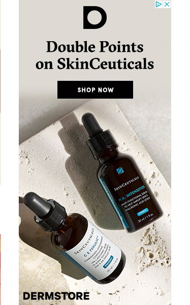 | 4.50 | | good_design | 0.700 | | simple | 0.400 | | unclear | 0.400 | | like_product | 0.200 | | boring | 0.100 | | deceptive | 0.100 | | dislike_product | 0.100 | | trustworthy | 0.100 |
| | | | |
| 1465524 | | 5.20 | | useful | 0.600 | | simple | 0.500 | | good_design | 0.400 | | trustworthy | 0.400 | | bad_design | 0.100 | | deceptive | 0.100 | | like_product | 0.100 | | unclear | 0.100 |
| - Medical Services and Prescriptions
| | | - This is a touchy subject that is hard to put in an AD. Something that a person wants to combat but when looking at an ad, it makes you feel that it is deceptive just to get looks at a web page rather than actually providing a solution to such a terrible subject matter.
|
| 1465703 | 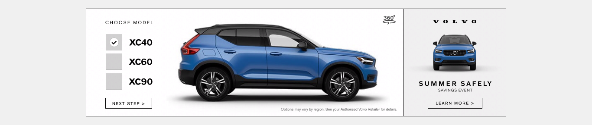 | 5.10 | | good_design | 0.700 | | simple | 0.400 | | like_product | 0.300 | | trustworthy | 0.300 | | useful | 0.200 | | boring | 0.100 | | unclear | 0.100 |
| | | | - Pretty basic ad with some creativity
- Volvo is a big brand, so inherently it is more trustworthy. The car looks pretty good too.
|
| 1465811 | 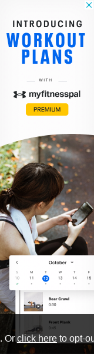 | 4.00 | | simple | 0.600 | | like_product | 0.300 | | bad_design | 0.200 | | boring | 0.200 | | good_design | 0.200 | | useful | 0.200 | | clickbait | 0.100 | | dislike_product | 0.100 | | entertaining | 0.100 | | trustworthy | 0.100 | | unclear | 0.100 |
| - Health and Supplements
- Self-Link
- Software Download
| | | - It would be intrusive and slow down my computer.
- I dislike it because it covers the page that I want to look at and makes me close it before I can see the page I wanted
- Good brand and also good design.
- There are 8 trillion workout programs already out there.
|
| 1465925 | | 5.10 | | simple | 0.500 | | good_design | 0.400 | | entertaining | 0.300 | | like_product | 0.300 | | trustworthy | 0.200 | | clickbait | 0.100 | | dislike_product | 0.100 | | manipulative | 0.100 | | unclear | 0.100 | | useful | 0.100 |
| | | | |
| 1466222 | | 4.40 | | good_design | 0.600 | | simple | 0.400 | | boring | 0.300 | | like_product | 0.300 | | unclear | 0.300 | | dislike_product | 0.200 | | useful | 0.200 | | entertaining | 0.100 | | trustworthy | 0.100 |
| - B2B Products
- Computer Security-related
| | | - It's disorganized and has wild font discrepancies.
- I personally have a long trusting history with Malwarebytes.
|
| 1466260 | | 4.45 | | simple | 0.545 | | good_design | 0.455 | | like_product | 0.273 | | bad_design | 0.182 | | boring | 0.182 | | entertaining | 0.182 | | useful | 0.182 | | deceptive | 0.0909 | | dislike_product | 0.0909 | | unclear | 0.0909 |
| - B2B Products
- Computer Security-related
- Self-Link
| | | - Like, it doesn't waste my time, but I also don't care and don't want to see this.
- I wouldn't trust an ad asking me to sign up for something; privacy concerns associated with giving out info voluntarily
|
| 1466379 | | 4.00 | | simple | 0.600 | | like_product | 0.400 | | bad_design | 0.200 | | boring | 0.200 | | entertaining | 0.200 | | good_design | 0.200 | | unclear | 0.200 | | clickbait | 0.100 | | dislike_product | 0.100 | | manipulative | 0.100 |
| | | | - I dislike the fact that the ad doesn't indicate which company it is.
- It's unclear but it looks like the ad might autoplay a snippet of the song. If it plays music without you interacting with the ad, I would very much have a negative reaction to it. If that's not the case, then it's a clean design and not a bad ad.
|
| 1466396 | 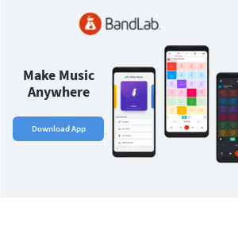 | 4.80 | | good_design | 0.500 | | simple | 0.500 | | like_product | 0.400 | | clickbait | 0.200 | | dislike_product | 0.200 | | useful | 0.200 | | boring | 0.100 | | deceptive | 0.100 | | entertaining | 0.100 | | trustworthy | 0.100 |
| | | | |
| 1466424 | 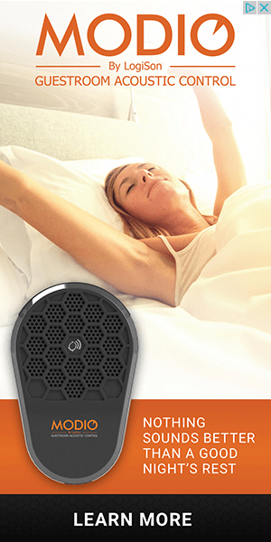 | 4.20 | | good_design | 0.500 | | like_product | 0.400 | | simple | 0.300 | | unclear | 0.300 | | bad_design | 0.100 | | boring | 0.100 | | deceptive | 0.100 | | dislike_product | 0.100 | | entertaining | 0.100 | | useful | 0.100 |
| | | | - the colours all go together well and are pleasing to the eye
- Greatly captured my attention by showing the product image and what it is about.
- I have no idea what the ad is for. The ad is extremely unclear.
- Not enough information about product.
|
| 1466531 | 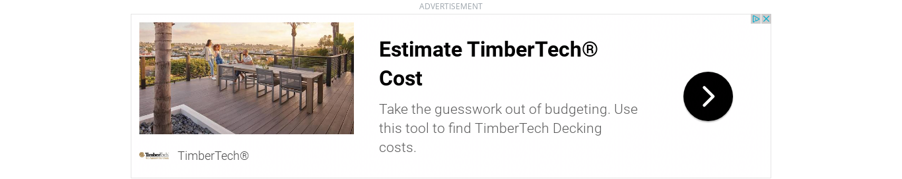 | 4.60 | | simple | 0.500 | | good_design | 0.400 | | boring | 0.300 | | like_product | 0.300 | | unclear | 0.200 | | trustworthy | 0.100 |
| | | | - no
- I like that the ad doesn't "vibrate" or flash.
- I like the picture associated with the ad.
|
| 1466641 | | 4.70 | | good_design | 0.600 | | simple | 0.500 | | like_product | 0.300 | | trustworthy | 0.300 | | unclear | 0.300 | | bad_design | 0.200 | | boring | 0.100 | | clickbait | 0.100 | | dislike_product | 0.100 | | entertaining | 0.100 | | useful | 0.100 |
| | | | |
| 1466734 | | 4.50 | | simple | 0.700 | | good_design | 0.500 | | dislike_product | 0.300 | | like_product | 0.200 | | trustworthy | 0.200 | | useful | 0.200 | | boring | 0.100 | | entertaining | 0.100 |
| | | | |
| 1466738 | 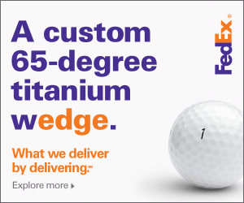 | 5.17 | | good_design | 0.667 | | simple | 0.500 | | trustworthy | 0.250 | | boring | 0.167 | | entertaining | 0.167 | | like_product | 0.167 | | unclear | 0.167 | | useful | 0.167 | | bad_design | 0.0833 | | dislike_product | 0.0833 |
| | | | - This doesn't make any sense
- The "wedge" looks forced, making it unappealing.
- I don't understand why they put edge in orange. It was kind of confusing.
|
| 1466777 | 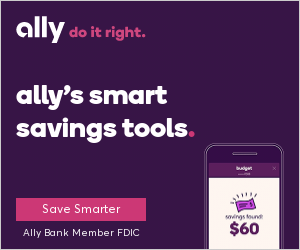 | 4.80 | | simple | 0.700 | | useful | 0.400 | | boring | 0.300 | | good_design | 0.300 | | like_product | 0.300 | | clickbait | 0.200 | | unclear | 0.200 | | bad_design | 0.100 | | dislike_product | 0.100 | | trustworthy | 0.100 |
| | | | |
| 1466870 | | 4.30 | | like_product | 0.500 | | simple | 0.500 | | good_design | 0.400 | | bad_design | 0.300 | | trustworthy | 0.300 | | useful | 0.300 | | unclear | 0.200 | | clickbait | 0.100 | | entertaining | 0.100 |
| | | | - Had a good mix of components between great design, photo of the book cover, and the logo of "The Oregonian" which lends me some confidence that the ad is trustworthy.
|
| 1466995 | | 4.90 | | simple | 0.600 | | good_design | 0.400 | | like_product | 0.400 | | bad_design | 0.200 | | entertaining | 0.200 | | useful | 0.200 | | boring | 0.100 | | dislike_product | 0.100 | | manipulative | 0.100 | | trustworthy | 0.100 |
| | | | - Not sure if there are any tricks in the future.
- It wasn't clickbait at least.
- cluttered
|
| 1467128 |  | 4.80 | | simple | 0.600 | | good_design | 0.400 | | like_product | 0.400 | | useful | 0.300 | | boring | 0.200 | | bad_design | 0.100 | | entertaining | 0.100 | | trustworthy | 0.100 | | unclear | 0.100 |
| | | | - Just to be specific: I think the little drawing on the right is kinda cheap/badly designed. The rest looks decent.
|
| 1467265 | | 5.30 | | good_design | 0.700 | | simple | 0.600 | | boring | 0.200 | | entertaining | 0.200 | | bad_design | 0.100 | | deceptive | 0.100 | | like_product | 0.100 | | unclear | 0.100 |
| | | | - The reason why I am interested in the product/service is because it is free. Other than that, I do not understand what it is they are offering.
|
| 1467293 | | 4.10 | | good_design | 0.400 | | simple | 0.300 | | useful | 0.300 | | bad_design | 0.200 | | boring | 0.200 | | like_product | 0.200 | | trustworthy | 0.200 | | clickbait | 0.100 | | dislike_product | 0.100 | | unclear | 0.100 |
| - Scientific Journal
- Self-Link
| | | - Don't know what it is all about. No idea what they are advertising. Some type of medical society? Does not make sense to me.
|
| 1467484 | | 4.70 | | good_design | 0.700 | | simple | 0.600 | | like_product | 0.400 | | useful | 0.400 | | unclear | 0.200 | | bad_design | 0.100 | | boring | 0.100 | | entertaining | 0.100 |
| | | | - This ad is clear enough to engage those who are running a business and believe that there might be a role for AI in their business. Since all this ad is trying to do is encourage that target audience to click through to learn more, I believe it has served its purpose and would consider this an effective ad.
|
| 1467537 | 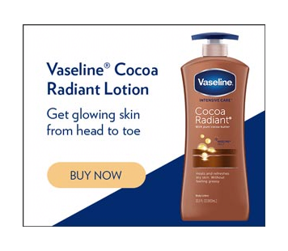 | 4.82 | | simple | 0.545 | | like_product | 0.455 | | good_design | 0.364 | | trustworthy | 0.364 | | boring | 0.182 | | dislike_product | 0.182 | | deceptive | 0.0909 | | entertaining | 0.0909 |
| | | | |
| 1467681 | 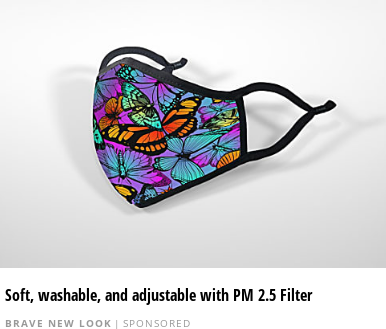 | 4.80 | | simple | 0.600 | | like_product | 0.500 | | useful | 0.500 | | good_design | 0.300 | | bad_design | 0.200 | | boring | 0.200 | | entertaining | 0.100 | | manipulative | 0.100 | | unclear | 0.100 |
| | | | - The colors really pop. The image is very clear, uncluttered. I like it.
- It's not something I'd click on
|
| 1467739 | | 4.50 | | good_design | 0.700 | | simple | 0.600 | | like_product | 0.300 | | dislike_product | 0.200 | | useful | 0.200 | | entertaining | 0.100 | | trustworthy | 0.100 |
| | | | |
| 1467945 | | 4.50 | | good_design | 0.600 | | simple | 0.600 | | boring | 0.200 | | trustworthy | 0.200 | | bad_design | 0.100 | | dislike_product | 0.100 | | unclear | 0.100 | | useful | 0.100 |
| | | | - This ad is too colorful given how I expect the rest of the website to look.
- Kind of Bland color wise.
- no
|
| 1467959 | | 5.00 | | simple | 0.600 | | like_product | 0.400 | | trustworthy | 0.400 | | good_design | 0.300 | | bad_design | 0.200 | | boring | 0.100 | | entertaining | 0.100 | | useful | 0.100 |
| | | | - I know those brands
- It's about the food I'm interested in.
|
| 1468142 | 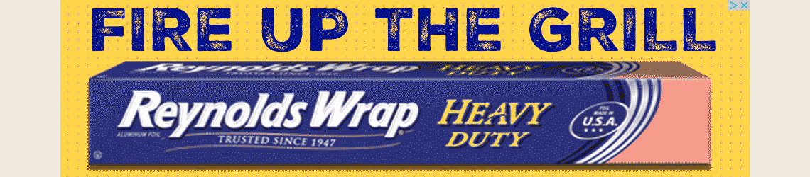 | 4.67 | | simple | 0.667 | | good_design | 0.500 | | trustworthy | 0.250 | | boring | 0.167 | | like_product | 0.167 | | bad_design | 0.0833 | | dislike_product | 0.0833 | | entertaining | 0.0833 | | useful | 0.0833 |
| | | | |
| 1468874 | 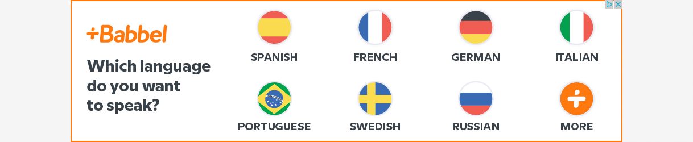 | 4.45 | | simple | 0.727 | | like_product | 0.455 | | good_design | 0.364 | | trustworthy | 0.273 | | useful | 0.273 | | boring | 0.182 | | bad_design | 0.0909 | | entertaining | 0.0909 | | manipulative | 0.0909 | | unclear | 0.0909 |
| | | | - none
- Learning a language I'm in favor of. Having it forced in my face I'm not a fan of.
|
| 1469473 | 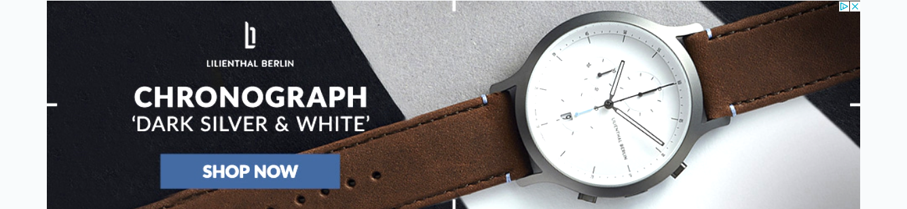 | 5.50 | | good_design | 0.900 | | simple | 0.700 | | trustworthy | 0.300 | | entertaining | 0.200 | | useful | 0.200 | | boring | 0.100 | | dislike_product | 0.100 | | like_product | 0.100 | | unclear | 0.100 |
| | | | |
| 1469647 | 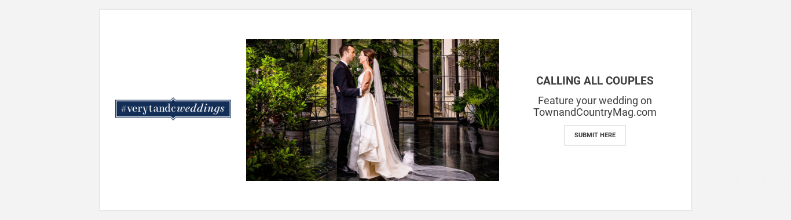 | 4.40 | | good_design | 0.400 | | simple | 0.400 | | unclear | 0.400 | | boring | 0.300 | | trustworthy | 0.300 | | bad_design | 0.100 | | dislike_product | 0.100 | | entertaining | 0.100 | | like_product | 0.100 |
| | | | - Too much white space. What am I "Submitting" by clicking on the ad? The picture looks like a fake stock photo.
- I'm not sure exactly what this ad is for. Its a little confusing and I'm not sure if its just a gallery of images or if it actually leads somewhere.
|
| 1469680 | | 4.45 | | good_design | 0.727 | | simple | 0.727 | | like_product | 0.455 | | useful | 0.182 | | clickbait | 0.0909 | | deceptive | 0.0909 | | dislike_product | 0.0909 | | entertaining | 0.0909 | | manipulative | 0.0909 | | trustworthy | 0.0909 |
| | | | - They don't tell you the price after the 30 days, You have to probably wade through layers of advertising to find that info out.
|
| 1469701 | 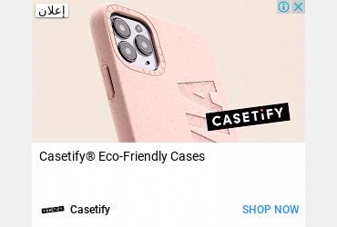 | 4.80 | | simple | 0.600 | | good_design | 0.500 | | like_product | 0.300 | | trustworthy | 0.300 | | clickbait | 0.200 | | entertaining | 0.200 | | bad_design | 0.100 | | dislike_product | 0.100 |
| | | | - Simple color scheme which I like
- It looks like a pop-up ad that you have to deal with before you can see what you’re really on the webpage to see.
|
| 1469723 | 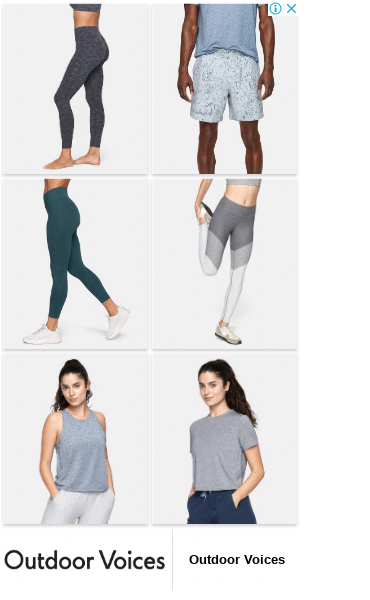 | 4.00 | | simple | 0.500 | | boring | 0.300 | | good_design | 0.300 | | like_product | 0.300 | | bad_design | 0.100 | | clickbait | 0.100 | | dislike_product | 0.100 | | unclear | 0.100 |
| | | | |
| 1469786 | | 4.80 | | good_design | 0.800 | | like_product | 0.400 | | simple | 0.400 | | boring | 0.200 | | manipulative | 0.200 | | useful | 0.100 |
| | | | - It has such a great design that I could honestly mistake it for being part of a site rather than being completely out of place.
- I don't like dev instead of developer.
- Just wanted to say the ad seems a bit manipulative since we don't know the criteria for "AAA game experts" that are teaching these online courses.
|
| 1469915 | | 4.70 | | simple | 0.900 | | boring | 0.700 | | good_design | 0.600 | | trustworthy | 0.300 | | useful | 0.300 | | bad_design | 0.100 | | dislike_product | 0.100 |
| | | | - I have used Staples before so I trust the ad. However, I don't really understand what is being pictured.
|
| 1470535 | | 5.00 | | good_design | 0.800 | | simple | 0.500 | | like_product | 0.400 | | bad_design | 0.100 | | boring | 0.100 | | unclear | 0.100 |
| | | | - It has good design, but i don't know what is being advertised.
- What is an art hound? I recognize MPR...
|
| 1470578 | | 4.91 | | useful | 0.636 | | simple | 0.545 | | good_design | 0.364 | | trustworthy | 0.364 | | like_product | 0.273 | | boring | 0.182 | | entertaining | 0.182 | | dislike_product | 0.0909 |
| | | | - I feel like you can't avoid news about COVID, so why do they need to advertise?
- Design was nice and eye catching, simple design and straight to the point.
|
| 1470872 | | 4.40 | | bad_design | 0.400 | | boring | 0.400 | | simple | 0.400 | | entertaining | 0.300 | | useful | 0.300 | | dislike_product | 0.200 | | good_design | 0.200 | | like_product | 0.200 | | trustworthy | 0.200 | | manipulative | 0.100 | | unclear | 0.100 |
| | | | - Don’t like banner ads like this
- I thought the "lit up" text was a little odd or random
|
| 1471126 | 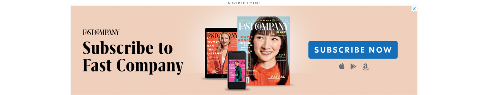 | 4.60 | | good_design | 0.700 | | simple | 0.500 | | boring | 0.300 | | dislike_product | 0.300 | | unclear | 0.300 | | entertaining | 0.200 | | like_product | 0.200 | | trustworthy | 0.200 | | bad_design | 0.100 | | clickbait | 0.100 | | useful | 0.100 |
| | | | |
| 1471553 | | 5.20 | | good_design | 0.500 | | simple | 0.500 | | useful | 0.500 | | trustworthy | 0.400 | | boring | 0.200 | | entertaining | 0.200 | | like_product | 0.200 | | manipulative | 0.200 | | unclear | 0.100 |
| | | | - I don't really know why I dislike this ad somewhat, other than the fact that it's just an ad, and I don't have a book I want to publish. I guess I also sort of think of pretentious people thinking they can write books people will buy using that, and that idea is annoying.
- If I find it very interesting in relation to books or book creation, I really like to read different types of books.
- The size of the advertisement, in relation to the page is a little obnoxious and pushy.
|
| 1471684 | 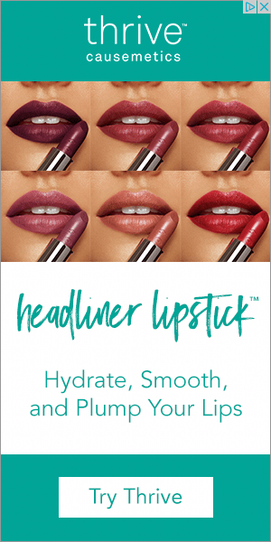 | 4.60 | | simple | 0.700 | | good_design | 0.400 | | boring | 0.300 | | like_product | 0.200 | | bad_design | 0.100 | | deceptive | 0.100 | | dislike_product | 0.100 | | trustworthy | 0.100 |
| | | | - I'm just not very personally interested in it.
- I wouldn't use the product. It wouldn't be targeted to me.
- If clearly shows that it’s a lip product and the wording is simple.
|
| 1471808 | | 4.20 | | simple | 0.500 | | boring | 0.400 | | good_design | 0.400 | | like_product | 0.300 | | trustworthy | 0.300 | | useful | 0.200 | | bad_design | 0.100 | | entertaining | 0.100 |
| - Household Products
- Self-Link
| | | - This ad doesn't apply to me
- I like this ad OK but it's still not that well designed. Font needs to be changed. Maybe Sears bigger, maybe some of the other content a bit smaller. Kind of blocky looking.
- I love how effective the ad is! Everything I need to know is in one place, and I appreciate things like that.
|
| 1472003 | 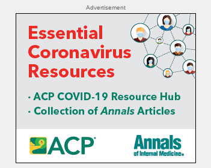 | 4.80 | | useful | 0.600 | | simple | 0.400 | | unclear | 0.300 | | boring | 0.200 | | good_design | 0.200 | | trustworthy | 0.200 | | like_product | 0.100 |
| - Scientific Journal
- Self-Link
| | | |
| 1472009 |  | 4.10 | | simple | 0.500 | | good_design | 0.300 | | like_product | 0.300 | | dislike_product | 0.200 | | useful | 0.200 | | bad_design | 0.100 | | boring | 0.100 | | clickbait | 0.100 | | deceptive | 0.100 | | trustworthy | 0.100 | | unclear | 0.100 |
| | | | - not my style, but at least clothes are a neutral topic
- I liked how they included the current promotions and sales.
- It’s disorganized and I don’t know what the point is.
|
| 1472075 | | 4.40 | | simple | 0.600 | | boring | 0.400 | | good_design | 0.300 | | like_product | 0.200 | | useful | 0.200 | | bad_design | 0.100 | | trustworthy | 0.100 |
| | | | - This is just quite boring and I might glaze right over it.
- Do not have any need or desire for the product at this time. I am not looking for lighting.
|
| 1472638 | | 4.90 | | like_product | 0.500 | | simple | 0.500 | | bad_design | 0.300 | | trustworthy | 0.300 | | unclear | 0.300 | | deceptive | 0.100 | | good_design | 0.100 | | manipulative | 0.100 | | useful | 0.100 |
| | | | - I am afraid that the advertiser here is taking advantage of the covid situation to make money for themselves. I am suspicious because corporations and organizations, although they're run by people, don't have feelings and don't care about people, so I'm inclined to believe that this organization is either trying to make money or is only doing this to bolster their image (so that they can make money in the future).
- I feel the music industry is more of a position to provide COVID support than I am so the only reason I would donate through this is if there was some type of dollar match for my donation.
|
| 1472734 | | 3.64 | | good_design | 0.545 | | simple | 0.545 | | useful | 0.455 | | boring | 0.273 | | dislike_product | 0.273 | | trustworthy | 0.182 | | bad_design | 0.0909 | | clickbait | 0.0909 | | deceptive | 0.0909 | | manipulative | 0.0909 |
| | | | - It is not a topic that interests me.
- Thinking about insurance costs is stressful
|
| 1473440 | | 4.70 | | like_product | 0.500 | | simple | 0.500 | | trustworthy | 0.400 | | good_design | 0.300 | | boring | 0.200 | | entertaining | 0.200 | | bad_design | 0.100 | | clickbait | 0.100 | | dislike_product | 0.100 | | unclear | 0.100 |
| | | | |
| 1474246 | | 4.30 | | good_design | 0.500 | | simple | 0.500 | | unclear | 0.300 | | useful | 0.300 | | boring | 0.200 | | trustworthy | 0.200 | | bad_design | 0.100 | | entertaining | 0.100 | | like_product | 0.100 |
| | | | - This ad is not relevant to me at all.
- I personally don't know what this is, so I don't have a strong opinion about it.
|
| 1474249 | | 4.50 | | simple | 0.600 | | trustworthy | 0.400 | | useful | 0.400 | | unclear | 0.300 | | boring | 0.200 | | dislike_product | 0.100 | | entertaining | 0.100 | | good_design | 0.100 |
| | | | - How much is the discount? "Flat" is vague.
- It's not flashing, which I hate
|
| 1474410 | 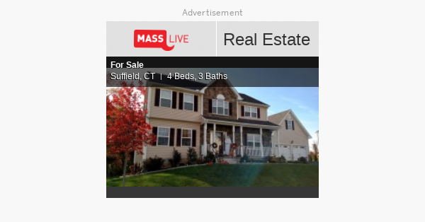 | 4.00 | | simple | 0.700 | | useful | 0.400 | | bad_design | 0.300 | | good_design | 0.300 | | like_product | 0.300 | | boring | 0.200 | | deceptive | 0.100 | | trustworthy | 0.100 | | unclear | 0.100 |
| | | | - I like real estate, and at this current time, I'm in the market for a home.
|
| 1474471 | 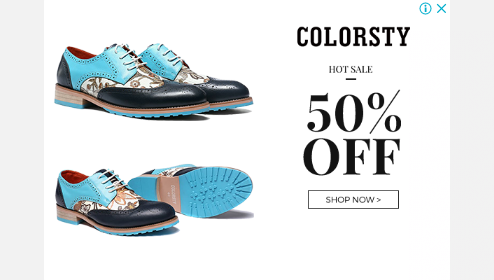 | 4.30 | | simple | 0.700 | | good_design | 0.500 | | dislike_product | 0.400 | | bad_design | 0.300 | | useful | 0.200 | | entertaining | 0.100 | | like_product | 0.100 |
| | | | - I don't like the shoes. It's clearly 50% off.
|
| 1474724 | 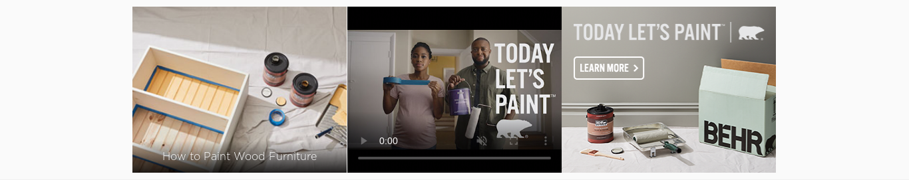 | 5.00 | | good_design | 0.600 | | simple | 0.500 | | dislike_product | 0.400 | | useful | 0.400 | | entertaining | 0.300 | | trustworthy | 0.200 | | bad_design | 0.100 | | boring | 0.100 | | clickbait | 0.100 | | deceptive | 0.100 | | manipulative | 0.100 |
| | | | - I like how subtle it is compared to how in your face the usual bad ads are.
|
| 1474809 | 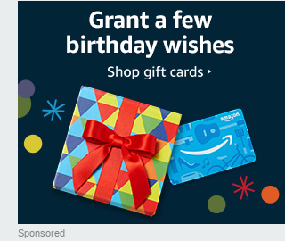 | 4.80 | | good_design | 0.700 | | simple | 0.600 | | entertaining | 0.300 | | trustworthy | 0.300 | | boring | 0.200 | | dislike_product | 0.200 | | useful | 0.200 | | like_product | 0.100 |
| | | | - It's a clean ad with a simple goal, overall I think it's fine but I do think giftcards and the business of selling them can sometimes be a bit shady so the nature of the company I would want to do a little research into.
- I figured out that you needed to rotate your smartphone to see the ads.
- no gimicks just straight forward message
|
| 1474812 | | 5.18 | | simple | 0.455 | | good_design | 0.364 | | trustworthy | 0.364 | | useful | 0.364 | | boring | 0.273 | | like_product | 0.273 | | dislike_product | 0.182 | | entertaining | 0.0909 |
| | | | - I don't know how to determine if it's trustworthy or not
- The ad is just not relevant to me, so I don't have a strong opinion about it.
|
| 1475257 | | 4.30 | | good_design | 0.600 | | simple | 0.600 | | boring | 0.500 | | bad_design | 0.200 | | dislike_product | 0.200 | | entertaining | 0.200 | | trustworthy | 0.200 | | deceptive | 0.100 | | like_product | 0.100 | | manipulative | 0.100 | | unclear | 0.100 | | useful | 0.100 |
| | | | - No pricing or other info
- Looks great, but it's a glamour shot. Bog standard car ad.
- Lexus is a great brand, and a very solid car company.
|
| 1475369 | 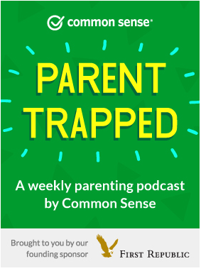 | 4.50 | | bad_design | 0.400 | | boring | 0.400 | | good_design | 0.300 | | like_product | 0.300 | | simple | 0.300 | | entertaining | 0.200 | | unclear | 0.200 | | useful | 0.200 | | manipulative | 0.100 | | trustworthy | 0.100 |
| | | | - I am familiar with Common Sense media (which I think this is), so I automatically trust it more and know what it's about.
- none
- Not relevant to me and I don't love to logo/design here. Doesn't seem very high quality.
- Parenting podcast is extremely vague, and the sponsor concerns me
|
| 1475508 | | 4.42 | | good_design | 0.667 | | simple | 0.417 | | unclear | 0.333 | | clickbait | 0.167 | | like_product | 0.167 | | bad_design | 0.0833 | | boring | 0.0833 | | dislike_product | 0.0833 | | entertaining | 0.0833 | | manipulative | 0.0833 |
| | | | |
| 1475612 | | 4.60 | | simple | 0.700 | | good_design | 0.600 | | boring | 0.300 | | trustworthy | 0.300 | | useful | 0.300 | | entertaining | 0.200 | | manipulative | 0.200 | | deceptive | 0.100 | | dislike_product | 0.100 |
| | | | - It isn’t applicable to me.
- Ad would not apply to me.
|
| 1475695 |  | 4.31 | | simple | 0.538 | | good_design | 0.462 | | boring | 0.308 | | dislike_product | 0.154 | | like_product | 0.154 | | trustworthy | 0.154 | | useful | 0.154 | | bad_design | 0.0769 | | clickbait | 0.0769 | | deceptive | 0.0769 | | entertaining | 0.0769 | | manipulative | 0.0769 | | unclear | 0.0769 |
| | | | - Don't like the idea of having to hand over personal information in exchange for something, especially when I don't know what the company will do with that information.
- This ad isn't annoying to me because it actually has to do with the site that it's on. You're on Vox - so there's an ad for their book club. It just makes sense.
- Another reason I don't like it is it doesn't really show what books are in the book club so it just looks boring.
|
| 1476227 | | 4.30 | | good_design | 0.400 | | like_product | 0.400 | | simple | 0.400 | | useful | 0.300 | | boring | 0.200 | | trustworthy | 0.200 | | bad_design | 0.100 | | clickbait | 0.100 | | manipulative | 0.100 |
| - Medical Services and Prescriptions
| | | - no
- I have no feelings about this ad
|
| 1476615 | | 4.80 | | simple | 0.700 | | bad_design | 0.300 | | boring | 0.200 | | good_design | 0.200 | | trustworthy | 0.200 | | dislike_product | 0.100 | | entertaining | 0.100 | | like_product | 0.100 | | unclear | 0.100 | | useful | 0.100 |
| | | | - no
- I like it that there is no annoying picture that sometimes can be a distraction
- If I click on it can I see prices?
|
| 1476838 | | 4.73 | | simple | 0.545 | | like_product | 0.364 | | entertaining | 0.273 | | good_design | 0.273 | | useful | 0.273 | | bad_design | 0.182 | | boring | 0.182 | | clickbait | 0.0909 | | deceptive | 0.0909 | | manipulative | 0.0909 | | trustworthy | 0.0909 | | unclear | 0.0909 |
| | | | - It's made to look like it's part of news.
- none
|
| 1476876 | | 4.73 | | good_design | 0.727 | | simple | 0.727 | | like_product | 0.455 | | trustworthy | 0.455 | | bad_design | 0.0909 | | deceptive | 0.0909 | | entertaining | 0.0909 | | manipulative | 0.0909 |
| | | | - It would be intrusive and slow down my computer.
- I know gatorade. If I click on it I will go to gatorade's site.
- Gatorade is my favorite sports drink.
- I don't believe so
- Colors are intrusive when compared to the style of the site
|
| 1476883 | | 4.80 | | good_design | 0.600 | | simple | 0.600 | | dislike_product | 0.300 | | boring | 0.200 | | entertaining | 0.200 | | like_product | 0.200 | | trustworthy | 0.200 | | bad_design | 0.100 | | clickbait | 0.100 | | useful | 0.100 |
| | | | - Very thin and long. Eyes have to canvass ad.
- It’s not too big so it’s not annoying or distracting.
- It seems to match the general website theme so that's good too.
- Good clean and simple. Easy to see what they're selling and see if you're interested in. Also it's relevant to me as I may click on this ad and it's from a reputable shop that I've used before.
|
| 1476967 | 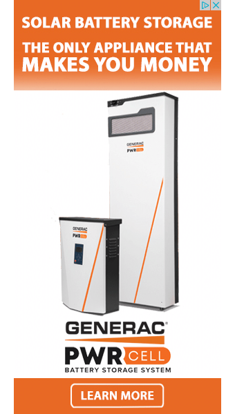 | 4.40 | | like_product | 0.500 | | simple | 0.500 | | good_design | 0.400 | | useful | 0.300 | | bad_design | 0.200 | | unclear | 0.200 | | boring | 0.100 | | clickbait | 0.100 | | deceptive | 0.100 | | entertaining | 0.100 | | manipulative | 0.100 | | trustworthy | 0.100 |
| | | | - There's not enough information in this ad that satisfies me. How does a solar battery storage unit make me money? I could click the ad to learn more, but I want an explanation within the ad because as it is, it's set up as clickbait.
|
| 1477037 | 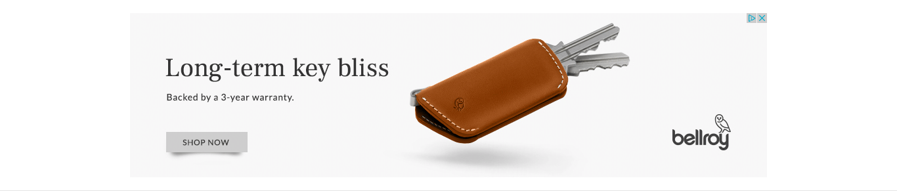 | 4.30 | | good_design | 0.700 | | simple | 0.600 | | like_product | 0.300 | | unclear | 0.300 | | useful | 0.300 | | dislike_product | 0.200 | | boring | 0.100 | | deceptive | 0.100 | | trustworthy | 0.100 |
| | | | - elegant design, mentions what it is in the ad
- looks to be using a 3rd party service to push ads instead of natively hosting the ad on the webpage for security
- It lacks a price, what the product is, and is forcing the person to click onto their website to see what the product is, too vague.
|
| 1477559 | | 4.40 | | good_design | 0.600 | | simple | 0.600 | | like_product | 0.300 | | boring | 0.200 | | unclear | 0.200 | | clickbait | 0.100 | | dislike_product | 0.100 | | manipulative | 0.100 | | trustworthy | 0.100 | | useful | 0.100 |
| - Consumer Tech
- Household Products
| | | - Not sure I understand the phrase, "All from Earth's biggest selection."
- This ad is from a trustworthy brand.
- I despise Jeff Bezos, CEO of Amazon.
|
| 1477859 | 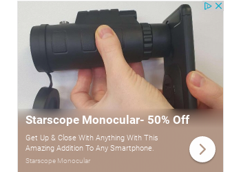 | 4.60 | | simple | 0.500 | | good_design | 0.400 | | like_product | 0.300 | | useful | 0.300 | | bad_design | 0.200 | | trustworthy | 0.200 | | boring | 0.100 | | deceptive | 0.100 | | dislike_product | 0.100 | | entertaining | 0.100 |
| | | | - Using a product image professionally taken would be much better than using a photo from what seems to be from a customer.
- use or purpose for lens is unclear
|
| 1477895 | | 5.00 | | simple | 0.700 | | boring | 0.500 | | good_design | 0.500 | | useful | 0.500 | | like_product | 0.300 | | trustworthy | 0.300 | | entertaining | 0.200 |
| | | | - No
- I like the colors used in the design.
|
| 1477945 | 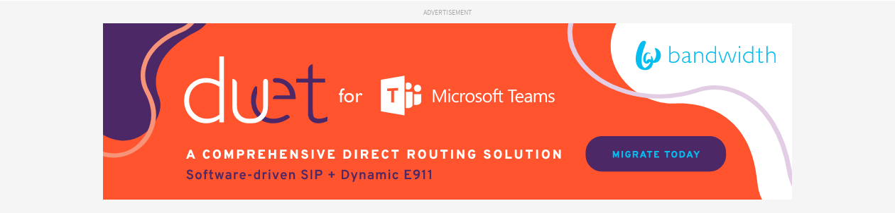 | 4.10 | | good_design | 0.600 | | trustworthy | 0.500 | | boring | 0.400 | | simple | 0.300 | | bad_design | 0.200 | | entertaining | 0.200 | | like_product | 0.200 | | unclear | 0.200 | | clickbait | 0.100 | | deceptive | 0.100 | | dislike_product | 0.100 | | manipulative | 0.100 | | useful | 0.100 |
| | | | - i dont like microsoft or that color orange
- I'm not really sure what it's advertising. Looks kind of cool I guess.
- This ad is not relevant to me. The design is very bright and annoying.
|
| 1478023 | | 3.80 | | simple | 0.500 | | boring | 0.300 | | trustworthy | 0.300 | | dislike_product | 0.200 | | manipulative | 0.200 | | useful | 0.200 | | bad_design | 0.100 | | clickbait | 0.100 | | good_design | 0.100 |
| | | | |
| 1478371 | | 4.30 | | simple | 0.400 | | good_design | 0.300 | | like_product | 0.300 | | boring | 0.200 | | entertaining | 0.200 | | bad_design | 0.100 | | clickbait | 0.100 | | dislike_product | 0.100 | | useful | 0.100 |
| - Medical Services and Prescriptions
| | | - Seems like a fairly simple article perhaps on an article or blog style website that provides information on things that could be useful, and therefore, it seems okay.
|
| 1478753 | | 4.20 | | simple | 0.500 | | boring | 0.400 | | good_design | 0.300 | | useful | 0.300 | | clickbait | 0.100 | | dislike_product | 0.100 | | trustworthy | 0.100 | | unclear | 0.100 |
| | | | - Not relevant to me, I don’t have asthma
- I don’t have asthma nor do I know anyone who is close to me that has it. I would totally ignore this ad if I saw it.
- I'm not familiar with asthma, so it doesn't really catch my attention. Maybe if I was more familiar with asthma, it would have more meaning.
|
| 1479182 | | 4.20 | | good_design | 0.400 | | simple | 0.400 | | like_product | 0.300 | | bad_design | 0.200 | | entertaining | 0.200 | | trustworthy | 0.200 | | boring | 0.100 | | clickbait | 0.100 | | deceptive | 0.100 | | dislike_product | 0.100 | | manipulative | 0.100 | | unclear | 0.100 |
| | | | |
| 1479291 | 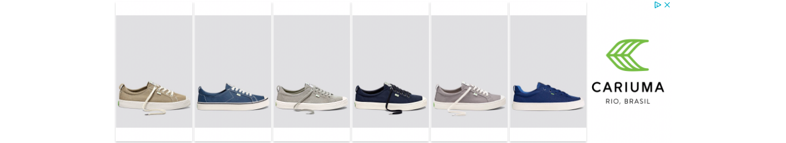 | 4.30 | | good_design | 0.600 | | simple | 0.600 | | boring | 0.400 | | like_product | 0.400 | | unclear | 0.300 | | dislike_product | 0.200 | | entertaining | 0.200 | | clickbait | 0.100 |
| | | | - I am not familiar with the brand so I am not sure what they are trying to advertise. Are they selling shoes? What's wrong with the shoelace?
|
| 1479419 | | 4.60 | | good_design | 0.700 | | boring | 0.200 | | like_product | 0.200 | | simple | 0.200 | | unclear | 0.200 | | bad_design | 0.100 | | clickbait | 0.100 | | deceptive | 0.100 | | entertaining | 0.100 | | trustworthy | 0.100 |
| | | | - Just think it isn't well done.
- i like the colors and the design. Futuristic
|
| 1479701 | | 4.50 | | good_design | 0.600 | | simple | 0.600 | | clickbait | 0.300 | | boring | 0.200 | | trustworthy | 0.200 | | dislike_product | 0.100 | | entertaining | 0.100 | | like_product | 0.100 | | useful | 0.100 |
| | | | - The colors are appealing
- no interestt. it is for rich people
|
| 1480046 | | 4.82 | | simple | 0.818 | | good_design | 0.636 | | like_product | 0.182 | | clickbait | 0.0909 | | dislike_product | 0.0909 | | manipulative | 0.0909 | | unclear | 0.0909 | | useful | 0.0909 |
| | | | - Not sure I like the Market House straight in the middle/seems forced I guess.
- Free shipping
- It takes up so much space on the page
|
| 1480404 |  | 4.50 | | simple | 0.800 | | good_design | 0.500 | | like_product | 0.400 | | bad_design | 0.300 | | boring | 0.200 | | deceptive | 0.100 | | entertaining | 0.100 | | trustworthy | 0.100 | | unclear | 0.100 | | useful | 0.100 |
| | | | |
| 1480640 | 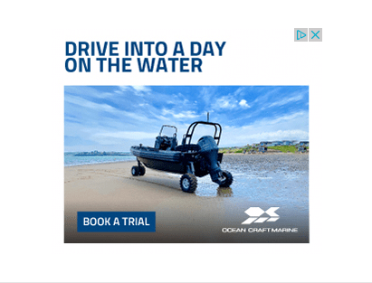 | 5.00 | | good_design | 0.600 | | simple | 0.600 | | entertaining | 0.400 | | boring | 0.300 | | like_product | 0.200 | | unclear | 0.200 | | deceptive | 0.100 | | dislike_product | 0.100 | | manipulative | 0.100 | | trustworthy | 0.100 | | useful | 0.100 |
| | | | |